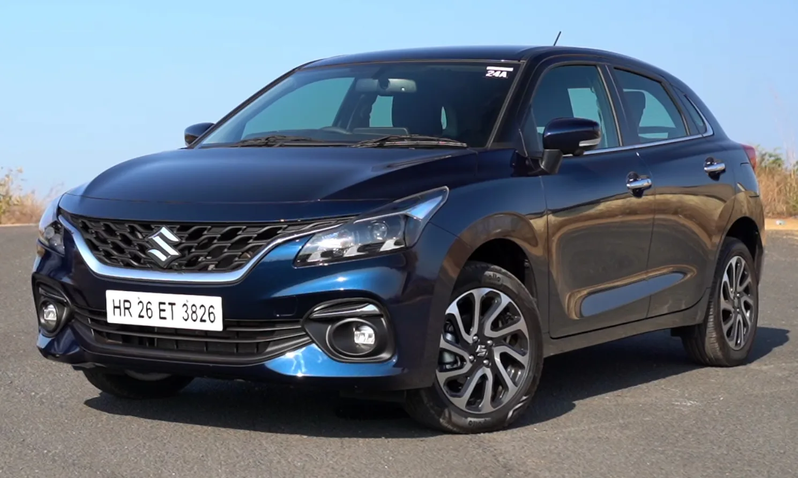
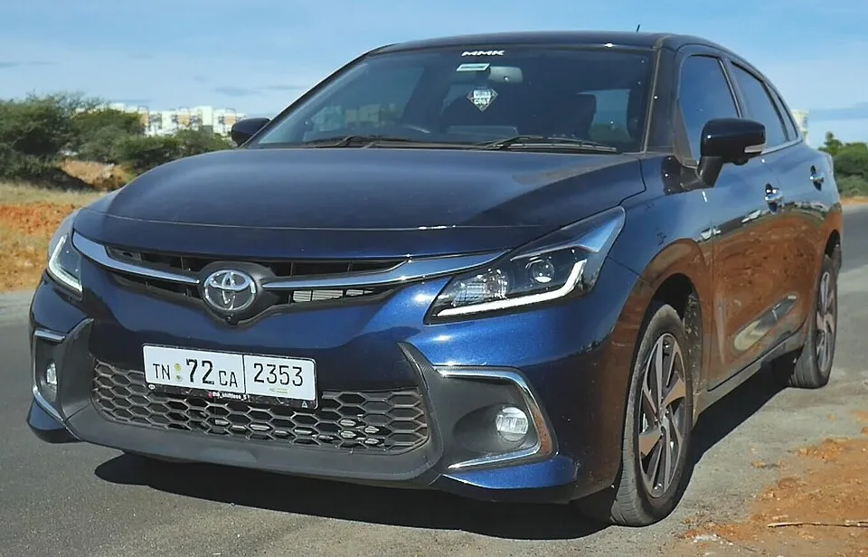
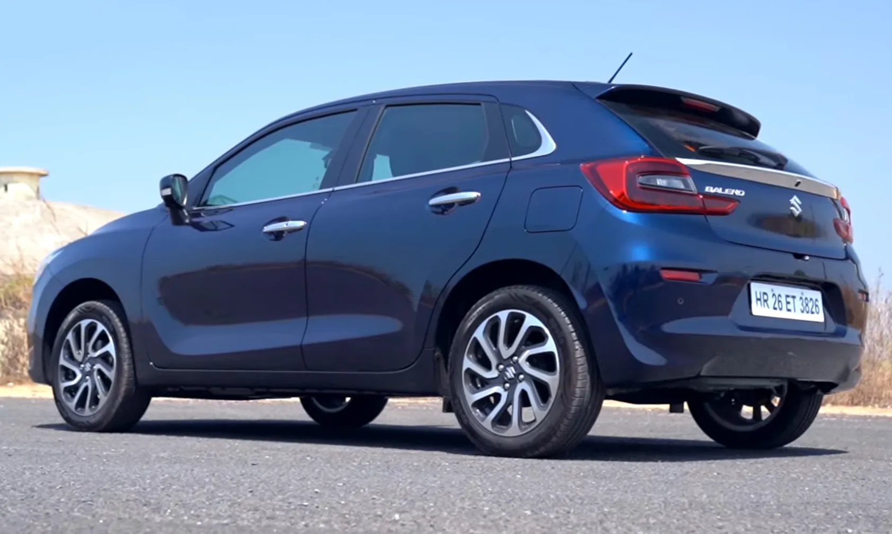
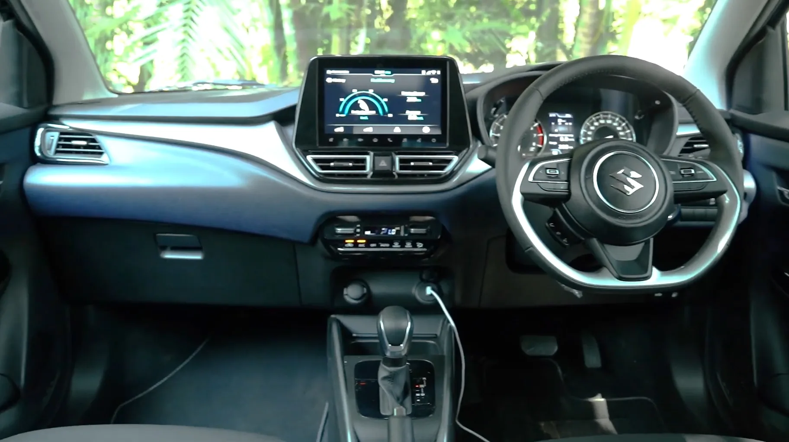
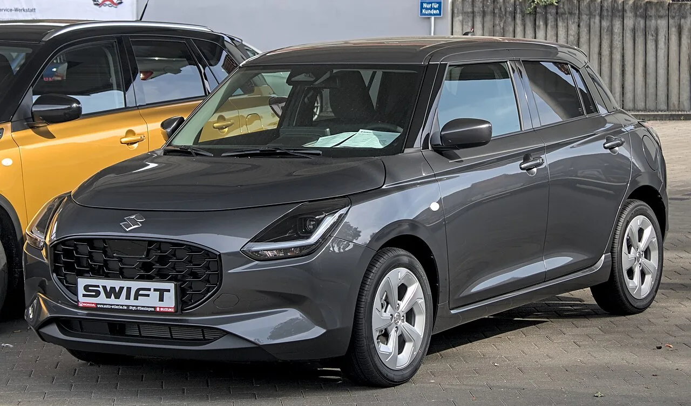
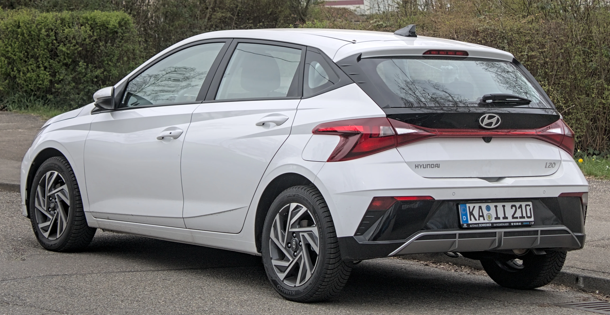

▲ 마루티 스즈키가 9월 5일 발레노 페이스리프트를 인도 시장에 출시했다. 그릴과 램프, 범퍼 디자인이 새로워졌다
1. 4년 만의 중기 페이스리프트, 9월 5일 출시
인도 최대 완성차 업체 마루티 스즈키가 9월 5일 프리미엄 해치백 발레노의 페이스리프트를 공식 출시했다. 2022년 2세대 모델이 나온 지 약 4년 만의 중기 변경으로, 외관 디자인을 다듬는 동시에 편의·안전 사양을 대거 보강한 것이 특징이다. 가격은 트림에 따라 59.9만 루피부터 99.9만 루피(딜러 출고가 기준, 약 844만원~1,408만원)까지 책정됐다.
발레노는 스즈키 산하 인도 법인 모델로, 해외에서는 토요타 글랜자(Glanza)라는 이름으로 배지 엔지니어링 형태로도 판매되고 있다. 이번 페이스리프트로 두 모델 모두 나란히 외관과 사양이 업데이트될 가능성이 크다.

▲ 발레노의 배지 엔지니어링 모델인 토요타 글랜자. 두 모델은 동일한 플랫폼과 파워트레인을 공유한다 ⓒ Wikimedia Commons

▲ 발레노 후측면. 리어 콤비램프와 범퍼 디자인이 새롭게 다듬어졌다 ⓒ Wikimedia Commons
2. 무엇이 바뀌었나 — 그릴·램프·범퍼 손질
전체적인 차체 윤곽은 기존과 동일하게 유지됐지만, 세부 디자인 요소는 새로워졌다. 전면에는 폭이 넓어진 그릴과 새로운 헤드램프, 재설계된 범퍼가 적용됐다. 후면 역시 LED 콤비램프 형상과 범퍼 디자인이 소폭 변경됐다. 실내는 기존과 동일한 9인치 터치스크린 인포테인먼트를 유지하되, 일부 보도에서는 더 큰 화면 탑재 가능성도 언급된 바 있다.

▲ 발레노 실내. 센터 터치스크린과 스티어링 휠 디자인은 기존 세대의 기본 구조를 유지했다 ⓒ Wikimedia Commons
3. 경쟁 모델엔 없는 무기 — 레벨2 ADAS
이번 페이스리프트의 가장 큰 화제는 레벨2 ADAS(첨단 운전자 보조 시스템) 탑재다. 현지 매체들은 발레노가 같은 급 경쟁 모델 중 유일하게 레벨2 ADAS 패키지를 갖췄다고 전한다. 여기에 통풍시트가 새롭게 추가됐고, 마루티 승용차 최초로 CNG 자동변속(AMT) 사양도 함께 도입돼 인도 시장 특유의 CNG 수요층까지 공략한다는 계획이다.
📍 인도 프리미엄 해치백 시장이란
인도에서는 배기량과 차체 크기에 따라 세금이 크게 달라지기 때문에, 소형 해치백이 대중차 시장의 핵심을 이룬다. 그중 발레노처럼 기본형 해치백보다 한 단계 위 사양·편의성을 갖춘 모델을 '프리미엄 해치백'으로 분류하며, 현대 i20·타타 알트로즈 등이 대표적인 경쟁 모델로 꼽힌다.
4. 엔진이 바뀌었다 — 4기통 K12N 대신 3기통 Z12E
이번 페이스리프트에서는 외관·사양뿐 아니라 파워트레인도 세대교체됐다. 기존 발레노에 쓰이던 1.2리터 4기통 K12N 엔진(90마력·113Nm) 대신, 스즈키 스위프트·디자이어에 먼저 탑재됐던 1.2리터 3기통 자연흡기 Z12E 엔진(83마력·112Nm)으로 교체됐다. 최고출력은 7마력 낮아졌지만, 회사 측은 저속 구간 토크 응답성을 개선하는 방향으로 세팅을 다듬었고 연비도 함께 향상됐다고 설명한다. 변속기는 기존과 같이 5단 수동과 AMT(자동화 수동변속기) 조합을 유지하며, CNG 사양에는 마루티 승용차 최초로 AMT 조합이 새롭게 추가됐다.

▲ 발레노 페이스리프트에 새로 탑재된 Z12E 엔진은 4세대 스위프트에 먼저 쓰인 유닛과 동일하다 ⓒ Wikimedia Commons
| 항목 | 내용 |
|---|---|
| 출시일 | 2026년 9월 5일(인도) |
| 가격대 | 59.9만~99.9만 루피(약 844만원~1,408만원) |
| 엔진 | Z12E 1.2L 3기통 자연흡기 83마력·112Nm(4기통 K12N에서 교체) |
| 변속기 | 5단 수동 / AMT |
| 신규 사양 | 레벨2 ADAS, 통풍시트, CNG AMT(마루티 승용 최초) |
5. i20 등과 격돌하는 인도 프리미엄 해치백 시장
발레노가 상대해야 할 경쟁 구도는 만만치 않다. 대표적인 경쟁 모델인 현대 i20는 최근 페이스리프트를 거치며 디자인과 편의 사양을 강화했고, N 라인 등 스포티 파생 모델로 라인업을 넓혀온 상태다. 발레노는 여기에 레벨2 ADAS라는 안전 사양 차별화 카드로 맞서는 모양새다. 인도 프리미엄 해치백 시장은 세단형 파생 모델인 디자이어까지 포함해 매달 수만 대 규모의 수요가 형성되는 만큼, 이번 페이스리프트가 발레노의 시장 점유율 방어에 얼마나 기여할지 주목된다.
발레노 페이스리프트의 전체 트림별 가격표는 마루티 스즈키 공식 홈페이지에서 확인할 수 있다. 바로가기

▲ 발레노의 핵심 경쟁 모델인 현대 i20. 인도 프리미엄 해치백 시장에서 두 모델의 경쟁 구도가 이어지고 있다 ⓒ Wikimedia Commons
✅ 발레노 페이스리프트, 이것만은 확인하세요
· 2026년 9월 5일 인도 출시, 2022년 2세대 이후 4년 만의 중기 변경
· 가격 59.9만~99.9만 루피(약 844만원~1,408만원), 그릴·램프·범퍼 디자인 변경
· 동급 최초 레벨2 ADAS 탑재, 통풍시트·CNG AMT 신규 추가
· 파워트레인은 4기통 K12N에서 3기통 Z12E로 교체(83마력·112Nm), 저속 토크 응답성 개선
· 현대 i20 등과 인도 프리미엄 해치백 시장에서 경쟁 지속
6. 정리
마루티 스즈키 발레노 페이스리프트는 파워트레인 변화 없이도 레벨2 ADAS와 통풍시트, CNG AMT 등 실질적인 상품성 개선에 집중했다는 평가를 받는다. 특히 동급에서 보기 드문 ADAS 탑재는 안전 사양을 중시하는 최근 인도 소비자 트렌드를 정조준한 선택으로 풀이된다. 현대 i20를 비롯한 경쟁 모델들이 버티고 있는 인도 프리미엄 해치백 시장에서, 이번 페이스리프트가 발레노의 입지를 얼마나 더 공고히 할지 지켜볼 일이다.